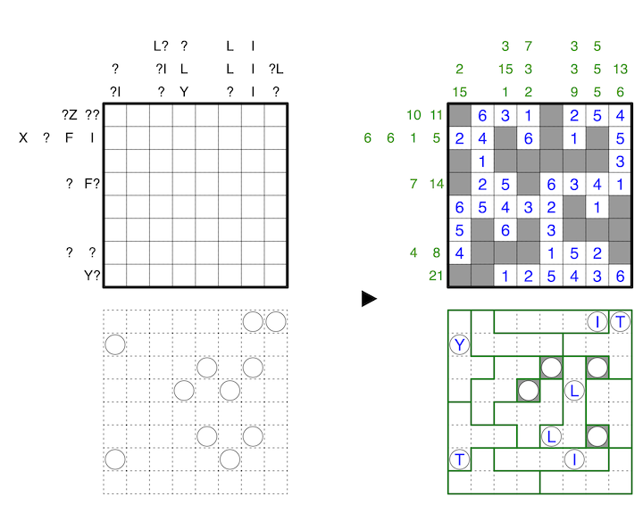
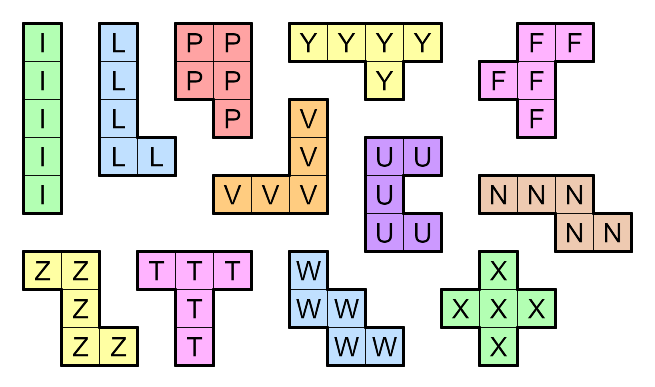

Same letters stand for same digits, different letters for different digits, and ? stands for any digit 0-9, but no clue may have a leading zero.
Divide almost every cell in the second grid into pentominos such that no two pentominos of the same shape may share an edge. Rotations and reflections of the same pentomino are the same shape.
For all circled cells in the second grid, if the cell in the same location of the first grid contains a number, then the letter corresponding to that number in the encoding indicates the shape of the pentomino at the circle in the second grid. If the corresponding cell is empty, then that cell in the second grid contains no pentomino. The only cells in the second grid that are not covered by a pentomino are circled cells corresponding to empty cells in the first grid. Two of the twelve possible pentominos do not have assignments in the encoding, but these pentominos may still appear in the second grid.
A 1-6 example with an encoding for 0-6 is provided.

